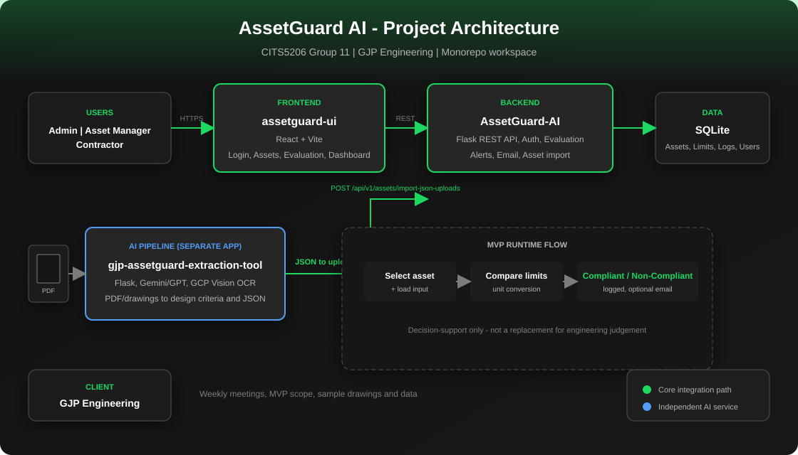

Scattered limits
Capacities live in PDFs �?hard to access on site.
Decision-support for engineering load compliance �?from drawings to on-site checks.
Client: GJP Engineering · UWA CITS5206 · Group 11
Scroll
GJP needs a faster, traceable way to compare equipment loads against design limits.
Capacities live in PDFs �?hard to access on site.
Manual comparison is error-prone.
Outcomes and alerts are not centralised.
Web platform plus AI pipeline: ingest criteria, manage assets, evaluate loads, log results, notify when non-compliant.
Decision-support only �?not a replacement for engineering judgement.
Present the running system. Details are covered verbally by the team.
Live app: 127.0.0.1:5173 (after start-dev)
Backup recording for the demo and user manual.
Video not uploaded yet.
Place file at finalDemo/video/demo.mp4
See video/README.md for recording outline.
Monorepo: React UI, Flask API, SQLite, separate AI extraction app.

UI �?API �?DB · PDF �?extraction tool �?JSON import
| Component | Tech | Port |
|---|---|---|
| assetguard-ui | React, Vite | 5173 |
| AssetGuard-AI | Flask | 5000 |
| extraction-tool | Flask, GCP, Gemini | 5001 |
Client check-ins, Git workflow, documented tests.
tests/test_api_flow.pytesting/finalDemo/Thank you
GJP Engineering · UWA CITS5206 Group 11